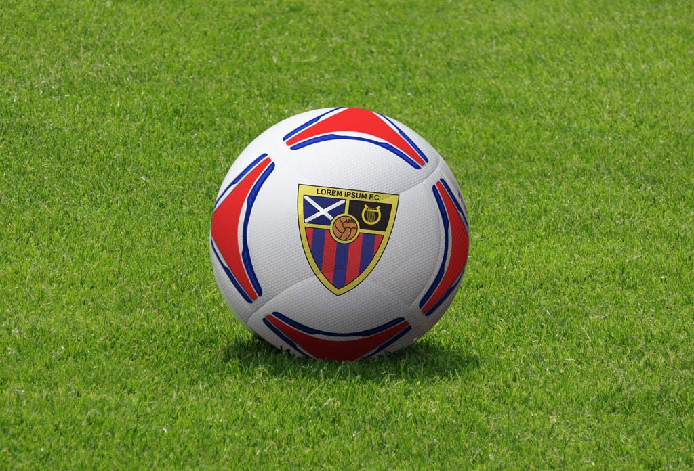
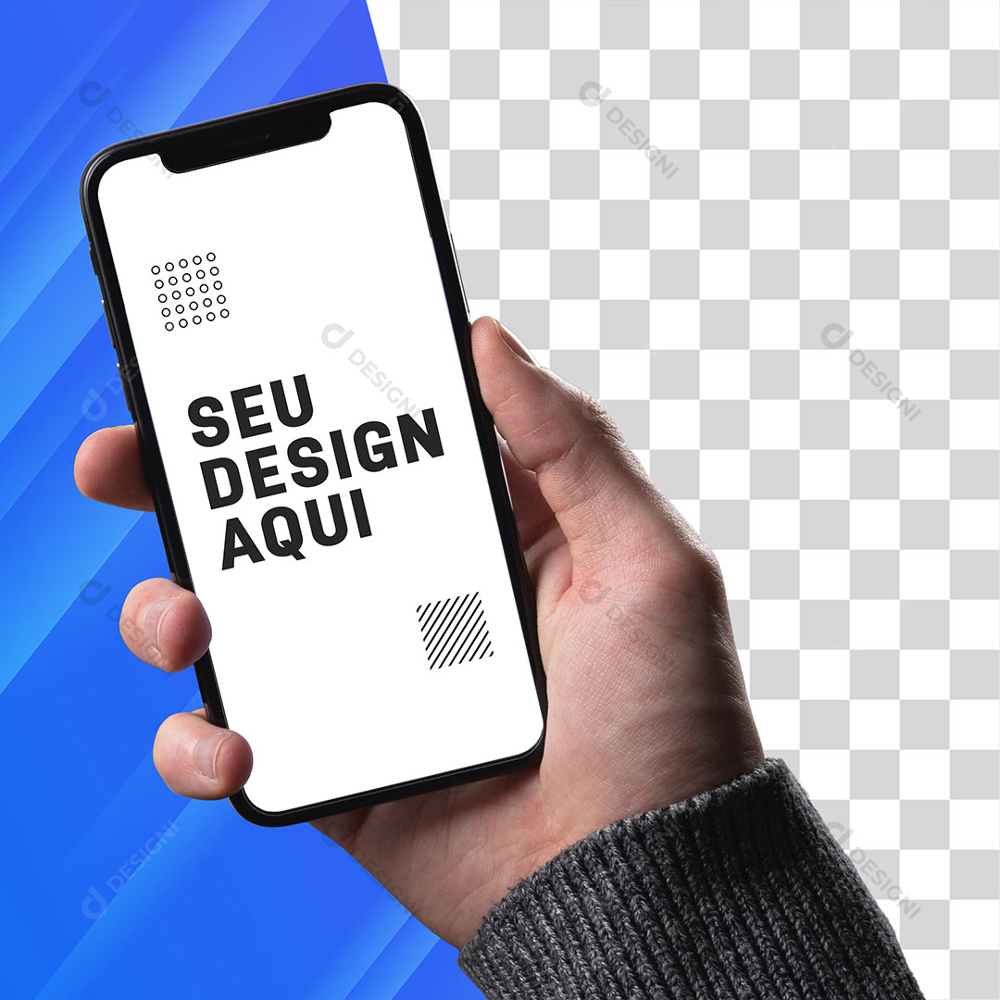

Centro Cultural Brasileiro
Descrição do projeto
Este projeto traz para o futebol de varzea , a montagem das equipes que participarão da competição.
A divisão das equipes que antes era motivo para desavensas antes do início da partida, e agora não mais, devido ao sistema de pareamento dos atletas.
Sendo realizado da maneira mais simples possível , os atletas são separados por posições de: Defesa ,meio e ataque , usando uma medida de habilidade de 1 a 3 , para definir cada atleta com sua respectiva habilidade.
Descrição do projeto
Descrição do projeto
Descrição do projeto
Voltar ao Inicio